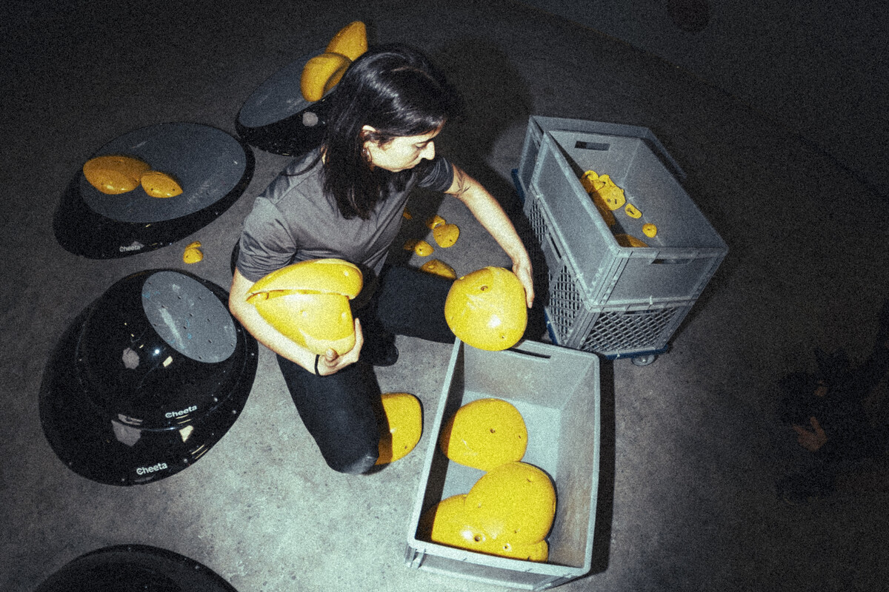
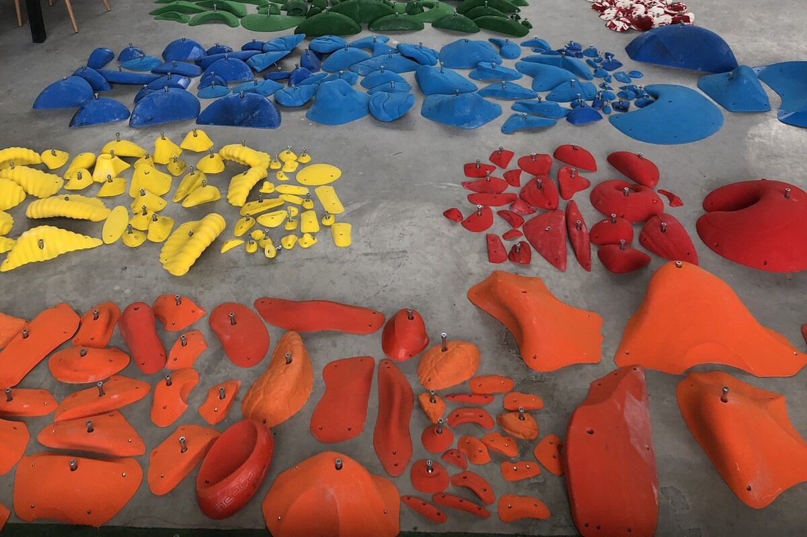

Mitől jó egy mászófogás?
A jó fogás nem csak arról szól, hogy milyen megfogni. Route setter szemmel a fogások építőelemek, amelyekkel mozgást lehet létrehozni.
Cikk olvasása →Szakmai cikkek mászófogásokról, route settingről, fogáskészletekről és mászóterem-tervezésről.
A jó fogás nem csak arról szól, hogy milyen megfogni. Route setter szemmel a fogások építőelemek, amelyekkel mozgást lehet létrehozni.
Cikk olvasása →
Mennyi fogás kell egy boulderre, miért fontosak a jibek, és hogyan lesz egy fogáskészlet valódi route setting eszköztár?
Cikk olvasása →Anyagminőség, textúra, kopás, jibelhetőség és hosszú távú használhatóság mászótermi környezetben.
Cikk olvasása →
A modern útépítés nem fogások elhelyezése, hanem mozgás tervezése. Ehhez új típusú eszköztárra van szükség.
Cikk olvasása →
Fogásszám, makrók, fa elemek, színek és bővítési stratégia új boulder vagy köteles mászóterem tervezéséhez.
Cikk olvasása →